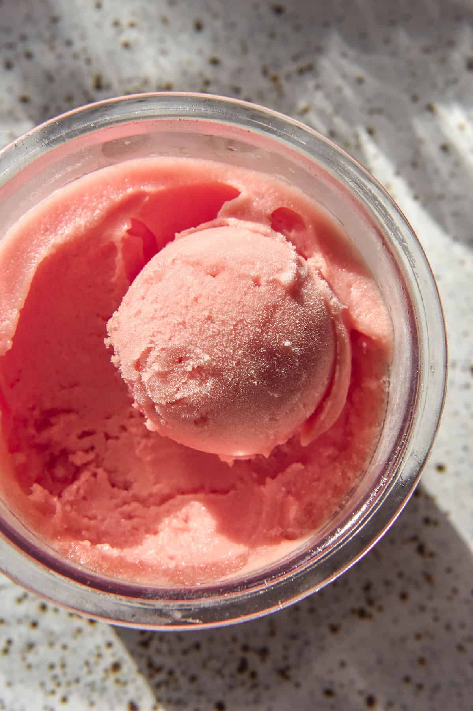

Protein Watermelon Sorbet with Ninja Creami

A quick, easy and juicy watermelon sorbet that’ll help you hit
your protein goals
Ingredients
- 500g watermelon, scooped from rind
- 1 Scoop of Vanilla Protein Powder
- Juice of 1 lime
- Pinch of salt
Steps
- Into a food processor, add in your ingredients, and blend until smooth
- Pour mixture into Creami pint, and freeze for at least 16 hours
- Take pint out of freezer, and run under hot water for 10-15 seconds to allow it to thaw from the sides
- Insert pint into Ninja Creami and run on sorbet cycle
- Remove from Creami machine and enjoy!